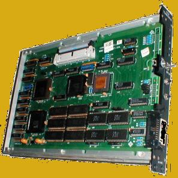
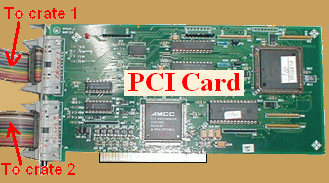

1. One or two CAMAC crates with any model ADCs, TDCs, QDCs, Scalers etc
2. New generation TCAMCON-95/CC-2000 transputer based crate controller with PCI card (ISA card can be used after minor modifications to the source code). It is also compatible with the older TCAMCON-95 transputer based system supplied by ELD, BARC. (contact A.Chatterjee DrAmbar@gmail.com for details). For a two crate system, there should be two controllers connected to dual port PCI card.
3. One PC (a reasonably new model) with Linux installed. Fedora Core Linux (any version) is recommended, however LAMPS works fine under older Linux versions such as Red Hat 9.x, 7.x etc. LAMPS works on other versions of Linux (such as SUSE), but you may have to change the make files and compile the driver yourself. I have not tested it.
4. Make sure that the graphics library gtk+ is installed. You can check this by typing:
rpm -q gtk+. If it is not installed you can load it from the installation CDs or
www.gtk.org
5. The X-Windows resolution should be set to 1024 x 768. If the resolution is higher, the fonts will look too small. If the resolution is smaller, the windows will appear partly off screen.
 |  |
| CC9/2000 Crate Controller | Dual Port PCI Card |